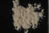

|
DOCUMENTATION_FORMAT: MINERAL
SAMPLE_ID: GDS85 (D-206)
MINERAL_TYPE: Tectosilicate
MINERAL: Buddingtonite (Feldspar group)
FORMULA: (NH4)AlSi3O8*0.5H20
FORMULA_HTML: (NH4)AlSi3O8•½H20
COLLECTION_LOCALITY: Sulphur Bank, California
ORIGINAL_DONOR: Dennis Krohn, USGS Reston
CURRENT_SAMPLE_LOCATION: USGS Denver Spectroscopy Laboratory
ULTIMATE_SAMPLE_LOCATION: USGS Reston (M. Dennis Krohn)
SAMPLE_DESCRIPTION:
Comment: there are weak bands at 1.4 and 1.55 µm. The 1.55 might be due to alunite. If so, the buddingtonite feature is more than 10 times stronger, so the buddingtonite 2.1-µm feature is probably spectrally pure. Similar arguments for the 1.4 band. If these features are due to buddingtonite itself, then it is even more spectrally pure. Roger N. Clark
IMAGE_OF_SAMPLE:

END_SAMPLE_DESCRIPTION.
XRD_ANALYSIS:
Quartz - major component
Buddingtonite - major component
No apparent alunite
Konnert, Judith and Marta Flohr, 1992, unpublished data, USGS Reston, VA.
END_XRD_ANALYSIS.
COMPOSITIONAL_ANALYSIS_TYPE: None # XRF, EPMA, ICP(Trace), WChem
COMPOSITION_TRACE: None
COMPOSITION_DISCUSSION:
END_COMPOSITION_DISCUSSION.
MICROSCOPIC_EXAMINATION:
Bimodal Grain size distribution:
mode 1: 217 µm @ 5 vol%
mode 2: 12 µm @ 95 vol%
avg. gr sz = 50 µm (includes quartz)
mode:
75 vol% Buddingtonite
20 vol% quartz
5 vol% Fe-oxides
Buddingtonite has mottled extinction and is highly altered. Quartz forms larger grains. Most buddingtonite is polygranular with effective grain size around 40 µm. No HCl fizz. G. Swayze.
END_MICROSCOPIC_EXAMINATION.
SPECTROSCOPIC_DISCUSSION:
END_SPECTROSCOPIC_DISCUSSION.
SPECTRAL_PURITY: 1b2_3_4_ # 1= 0.2-3, 2= 1.5-6, 3= 6-25, 4= 20-150 microns
{kind=link}